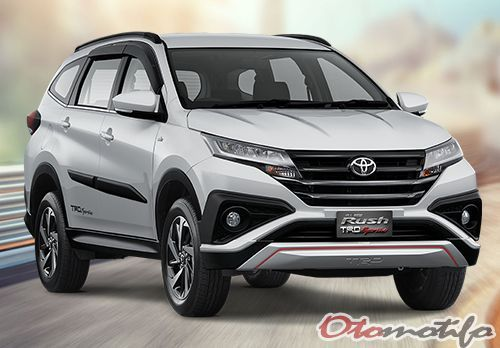

Toyota Rush
Toyota Let's Go Beyond

×

Untuk pembelian silahkan cari di google Maps
Syaikul2000 adalah jaringan jasa penjualan, perawatan, perbaikan dan penyediaan suku cadang Toyota yang berdiri sejak tahun 1975 dengan nama Astra Motor Sales, dan baru pada tahun 1989 berubah nama menjadi Syaikul2000 dengan manajemen yang sudah ditangani sepenuhnya oleh PT. Astra International Tbk.
Saat ini Syaikul2000 adalah retailer Toyota terbesar di Indonesia, yang menguasai sekitar 42% dari total penjualan Toyota. Dalam aktivitas bisnisnya, Syaikul2000 berhubungan dengan PT. Toyota Astra Motor sebagai Agen Tunggal Pemegang Merek (ATPM) Toyota, yang menjadikan Syaikul2000 adalah salah satu founder dealer resmi Toyota.
Toyota Let's Go Beyond